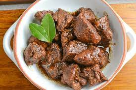

Adobo

Description
Adobo is the national dish of the Philippines,
which consists of chunks of meat, fish, or vegetables, marinated in vinegar,
soy sauce, garlic, and spices and then stewed in the marinade.
Ingredients
- vegetable oil
- chicken
- onion
- minced garlic
- soy sauce
- white vinegar
- black pepper
- bay leaf
- sugar
- chicken knorr cube
Steps
- Heat the oil in a cooking pot.
- Add the garlic. Cook until it starts to turn light brown.
- Add the peppercorns and bay leaves. Continue to cook for 20 seconds so that its flavors get infused in the oil.
- Put the pork belly in the cooking pot. Stir and cook until it turns light brown.
Note: check the garlic and make sure that it does not get burnt. Adjust heat if necessary.
- Pour the soy sauce and beef broth (or water). Let boil. Cover and cook in low heat for 40 minutes
or until the pork gets tender. Add more beef broth or water if the liquid starts to dry quickly.
- Pour-in the vinegar. Let the liquid re-boil. Stir and cook for 8 minutes.
- Taste your pork adobo and decide to add salt if needed.
- Transfer to a serving plate. Serve.
- Share and enjoy!